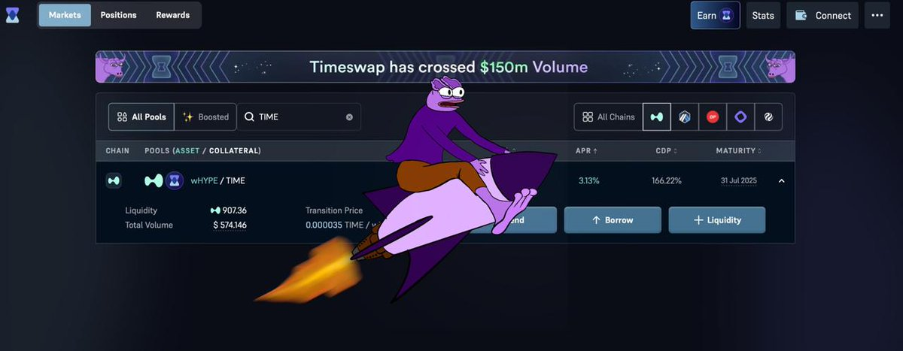
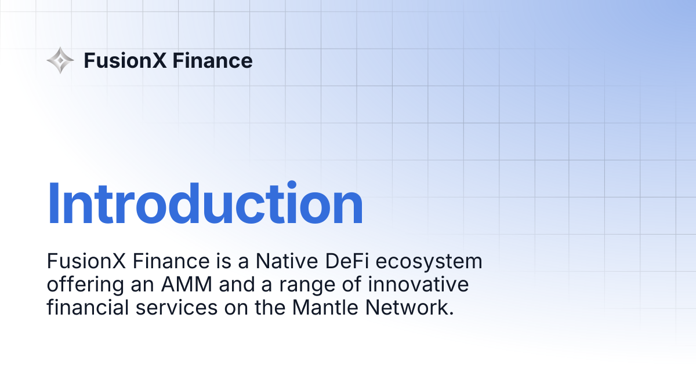

Community
- Discord, Telegram and X
- Moderation
- Events and AMAs
- Community activation
- Sentiment and feedback
Crypto-native operator
I help crypto products grow, support users, activate communities and turn product friction into better retention.
What I can own
I sit close to users, community, product and markets. Recruiters should not have to guess where I fit.
Case studies
Not a repeat of my CV. These are the clearest examples of what I owned and what changed.

Timeswap product interface. Open the public protocol.
01 / Timeswap
An early DeFi protocol needed trust, clearer product education, responsive support and repeat liquidity.
Managed community and support across Discord, Telegram and X; ran AMAs, education and campaigns; worked directly with users, KOLs and liquidity partners; fed recurring friction back into product and communication.
Managed a 50K+ Discord, helped activate 2,000+ users in one month, contributed to roughly 50% TVL growth and personally onboarded about $290K in starting LP capital.

FusionX product documentation. Open the public product context.
02 / FusionX, SummitX & CobaltX
Several EVM and SVM products needed distinct positioning, coordinated launches and credible distribution among traders.
Ran GTM campaigns, KOL and partner coordination, trader and community groups, launch messaging and the feedback loop between product teams and active users.
Helped scale SummitX to 150K+ followers and supported CobaltX campaigns tied to more than $100M in 30-day trading volume.

A personal market and execution dashboard I use to review trades.
03 / Independent operator
Crypto product decisions often look different from a dashboard than they do when a real user is bridging, trading, providing liquidity or asking for help.
Used wallets, DeFi protocols and perp venues; wrote product and market research; documented trader UX problems; built AI-assisted tools for market analysis, content and personal knowledge retrieval.
A stronger voice of user and trader perspective, backed by actual product use and working tools rather than generic crypto commentary.
Selected work
Research, product thinking, community work, social posts and the tools behind my daily workflow.
What makes traders stay: liquidity, fees, listings, trust and execution.
Read on Substack -> Market writingHow leverage, one dominant story and online attention changed market behaviour.
Read on Substack -> Community operationsWhy recurring user questions should improve support, communication and product.
Read on X -> Memes / social voice303K+ combined views across the top three shown below.
View X media -> AI / market analysisLive market context, trade theses, execution review and P&L reasoning.
Open live dashboard -> Content operationsA working draft, editing and publishing system built around my own writing.
View repository ->A few posts
Builds & experiments
These are personal operating tools for markets, research, content and community monitoring. They are useful to me first.
Watches selected AI and prediction-market accounts, understands the update, rejects weak opportunities and sends a meme candidate to Telegram.

Moves my long X articles into an editable publishing queue while keeping headings, links and media. It cuts out repeated formatting and draft tracking.
Indexes the text, images, files, links and voice notes in my personal Telegram archive so I can retrieve ideas and media by describing what I remember.
My edge
I actively use wallets, DeFi protocols, perp DEXs and trading platforms. That means I understand product friction from the user side, not just from a marketing dashboard.
How I work
Listen, identify friction, fix the communication and feed the insight back into product.
Read the questions, observe behaviour and notice what keeps breaking.
Turn product mechanics into clear support, education and launch communication.
Close the loop between users, community, growth and product teams.
Track activation, retention, volume and useful behaviour, not noise alone.
Experience
The case studies above carry the detail. This is the timeline.
Multi-product GTM, partnerships, KOL coordination, launch execution and trader-community feedback.
Community, support, content, product education, campaigns, user activation and liquidity relationships.
Onchain product use, market research, social content and personal AI operating tools.
Role-specific CVs
Three focused one-page CVs. Same career, different emphasis.
Contact